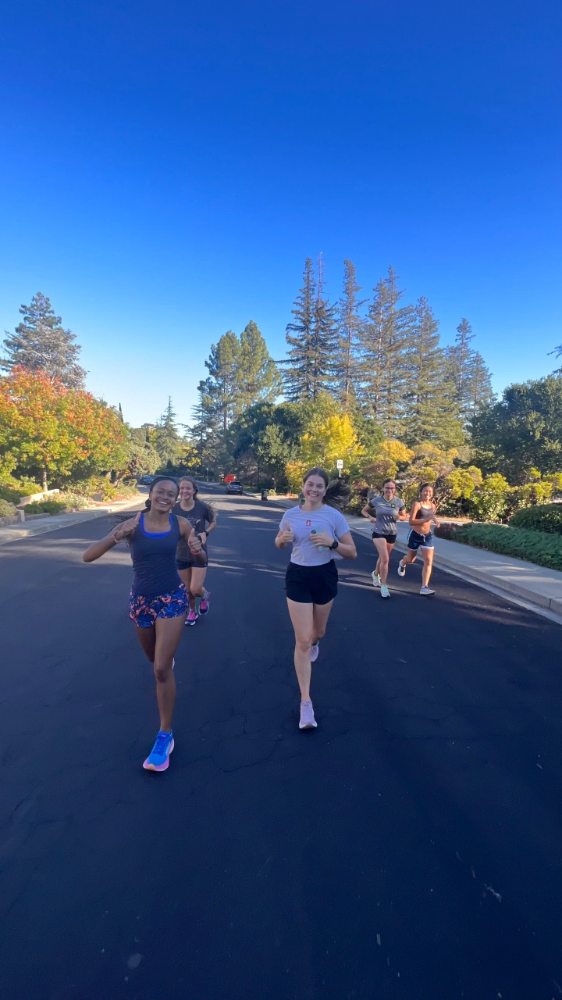
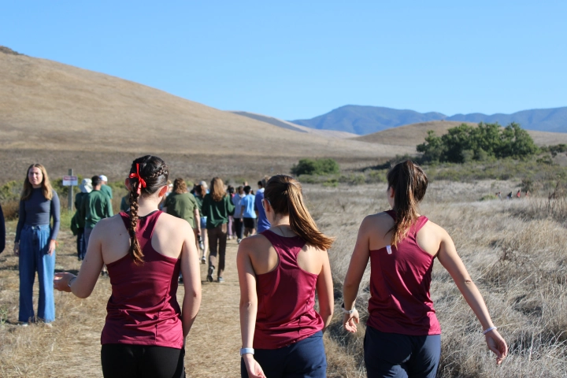
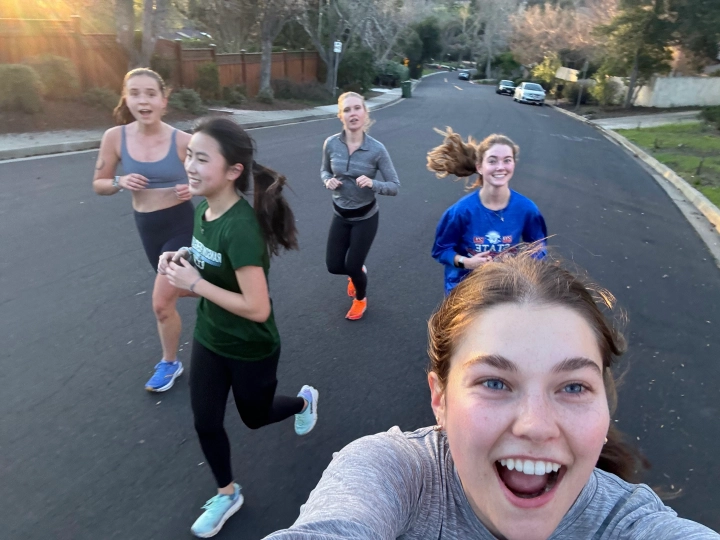
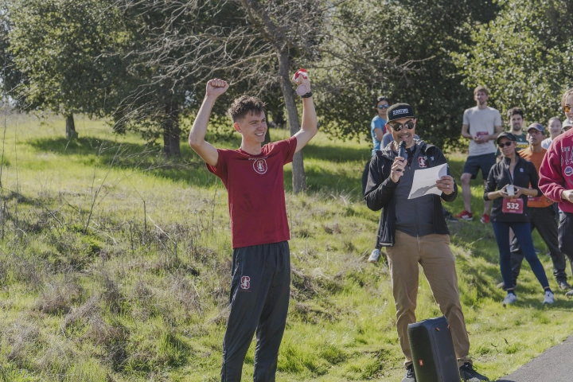
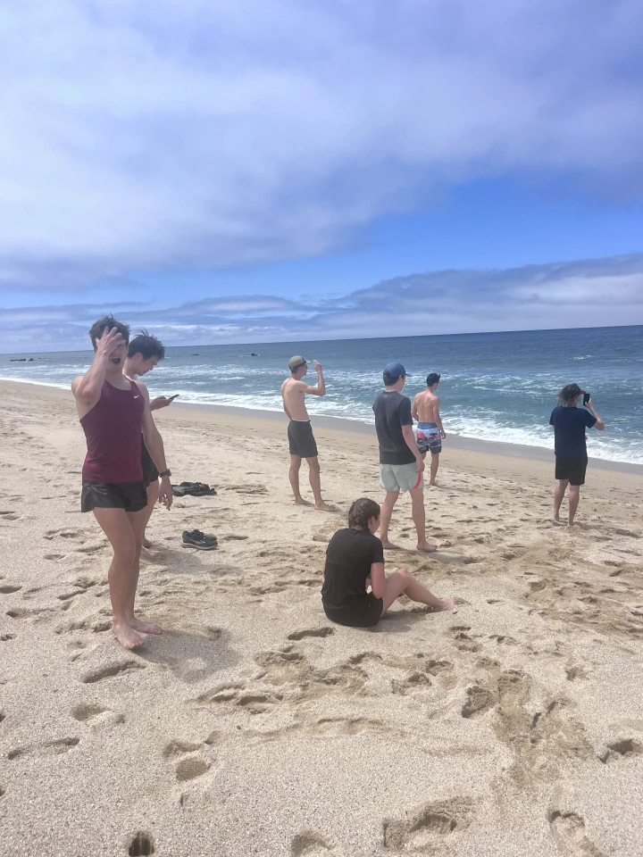

OUR ROUTES

And more...
Traditions

Dish Run
3.25 mile run through the iconic Dish trail at Stanford, sponsored by the Stanford Rec and Wellness in partnership with Stanford Running Club.
Spring

Liquidy Lag Lap
Our take on the classic beer mile, but with a twist. Run a lap around Lagunita Lake, drink a beverage each quarter way, and repeat.
Fall / Spring

Stanford to Sea
24 mile run from Stanford to the Pacific Ocean, with a stop at the beach and a ride back to campus.
Spring